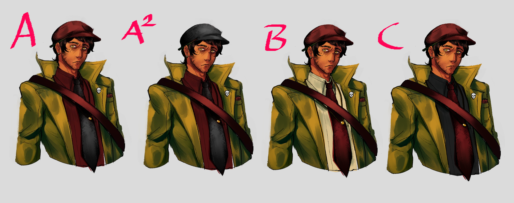
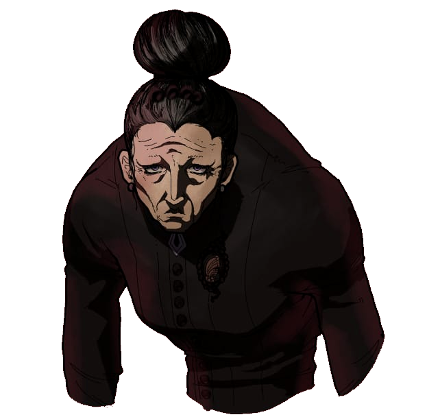
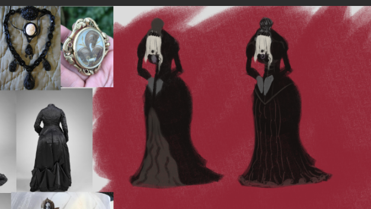
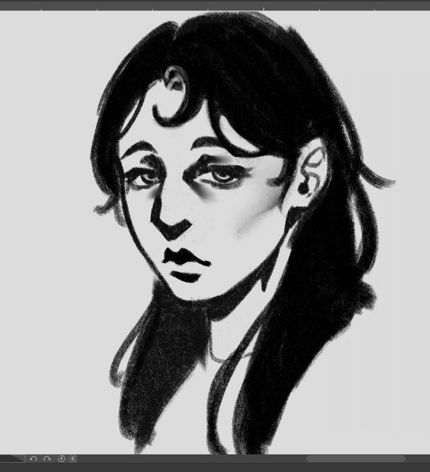
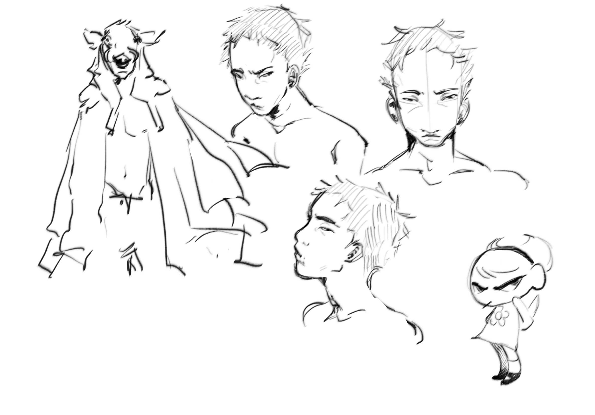
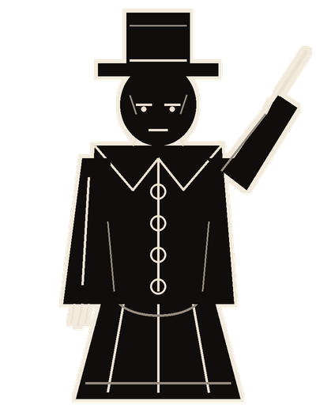
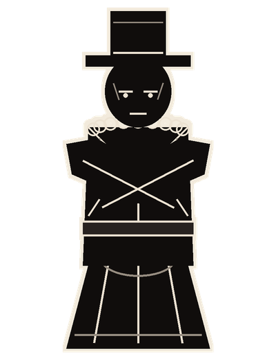

About the gameSobre o jogo
You play a Necromancer in Irkalla, and you have seven days to solve a case. By day you investigate: you receive visitors, interrogate suspects, pin testimony fragments to the Contradiction Board and examine corpses on the Autopsy Table before they rot. At night the hordes come, and you fight back with the dead. Combat is turn-based on a small board, with turn order set by agility on the Tape. Fallen bodies can be raised as your own units, devoured to recover Vestige, or used to speed up and delay turns. Six elements in three opposing pairs (Bone and Flesh, Memory and Oblivion, Name and Silence) decide who is weak to what, and raised units learn their opposite element by using it. Every horde you win earns questions for the next interrogation. On day 7, you make your accusation. UNSWORN is a university extension project made in Godot 4.6 with C#.
Você é um Necromante em Irkalla e tem sete dias para resolver um caso. De dia você investiga: recebe visitas, interroga suspeitos, prende fragmentos de testemunho no Quadro de Contradições e examina cadáveres na Mesa de Autópsia antes que apodreçam. À noite vêm as hordas, e você responde com os mortos. O combate é por turnos num tabuleiro pequeno, com a ordem definida pela agilidade na Fita. Quem cai pode ser levantado como unidade sua, devorado para recuperar Vestígio ou usado para apressar e atrasar turnos. Seis elementos em três pares opostos (Osso e Carne, Memória e Esquecimento, Nome e Silêncio) decidem quem é fraco a quê, e os levantados aprendem o elemento oposto usando o próprio. Cada horda vencida rende perguntas para o próximo interrogatório. No dia 7, você faz a acusação. UNSWORN é um projeto de extensão universitária feito em Godot 4.6 com C#.
In development: no public build yet.Em desenvolvimento: ainda sem build pública.
GalleryGaleria







CreditsCréditos
- Kauã Neves (Neferoo no itch.io)